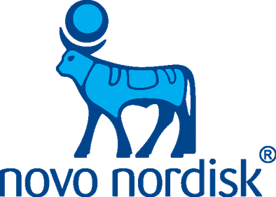
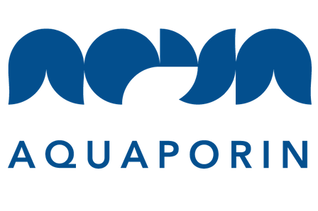
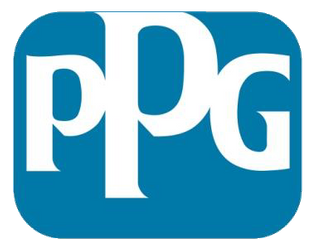
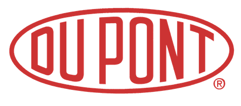

The Arleth group is interested in promoting the use of X-ray and neutron techniques with industry. The goal of this is to use these powerful small-angle scattering techniques to solve the real problems that companies encounter.
We have worked on project with a variety of companies in a wide range of industries since 2013 through two different projects.
NXUS was a pilot project promoting industrial use of X-rays and neutrons through collaborations with university scientists. It gave the opportunity for members of industry to have their samples investigated using advanced X-ray and neutron scattering techniques. A wide range of samples were studied through the project: from pharmaceuticals and biomolecules to catalysts and polymers.
Currently, industrial research is done as part of the LINX Project, a collaboration between three major Danish universities (the Technical University of Denmark, the University of Aarhus, and the University of Copenhagen) and a number of industry partners. At the University of Copenhagen, we perform small-angle X-ray and neutron scattering measurements both using our facilities in the Niels Bohr Institute and at large-scale facilities in Europe and farther afield. At the other universities, diffraction and imaging measurements can also be performed to provide complementary information. The goal is to create an ecosystem that ensures that Danish companies can make best use of advanced X-ray and neutron technologies to the fullest, especially as MAX IV, the ESS, and European XFEL are coming online in the near future.
Below, we provide some information about previous projects that we have performed.
 Novo Nordisk Improving the stability of protein based medicine Project Summary Second project
 Aquaporin Revolutionizing water purification through biotechnology Project Summary
 PPG Watching paint dry Project Summary
Ferring Pharmaceuticals Controlling the stability of pharmaceuticals Project Summary
GubraRevealing peptide structure-function relationship Project Summary
SymphogenOn the road to effectively treating cancer Project Summary
 Du Pont Adding value and stability to fermented milk drinks Project Summary
Rigshospitalet Stopping microorganism invasions Project Summary
Haldor Topsøe Speeding up catalysis Project Summary
NovozymesNew angles on understanding the use of enzymes Project Summary